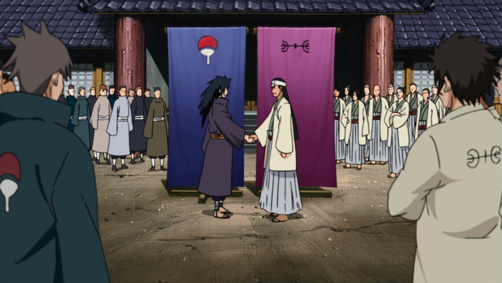
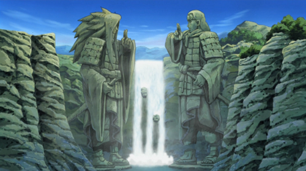

Know more about how our village was created
During the Warring States Period, ninja were organised into small mercenary clans that knew nothing but battle. The two strongest of these clans were the Senju and the Uchiha, who had warred against each other for their entire histories. Eventually, intending to end the constant bloodshed, Hashirama Senju used his position as leader of his clan to broker a truce with the Uchiha clan through their leader, his childhood friend Madara Uchiha. Thus the Senju, the Uchiha, and their respective affiliated clans formed the first shinobi village: Konohagakure — a name invented by Madara himself.
Hashirama used his Wood Release abilities to produce much of the village's infrastructure. This ability and his ideals were two of the reasons he was chosen to become the village's leader: the Hokage. Madara, however, feared that the Senju would oppress his clan and attempted to gather support to overthrow Hashirama. No Uchiha would help, forcing him to take on Hashirama by himself. Madara was ultimately defeated at what would be called the Valley of the End and he was believed to have died. As a result of the battle, Konoha came into possession of the Nine-Tails. To contain its enormous power, the village began its trend of sealing the beast within the Uzumaki, a clan that the Senju and thus the rest of Konoha had close ties with.